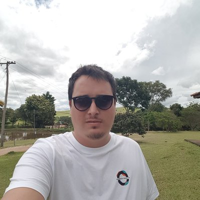

- Home
- >
- Currículo
Currículo
Dados Pessoais

Nome:
Gustavo Otaviano Costa
Data de Nascimento:
06/05/1994
Residência:
Campinas, Brasil
Idiomas:
Português (Nativo)
Inglês (Intermediario)
Sobre Mim
Sou estudante de Analise e Desenvolvimento de Sistemas na Fatec de Campinas, atualmente conheço algumas linguagens de programação e banco de dados. Estou indo para o 4º semestre do meu curso, durante as férias vou aproveitar para estudar mais e adquirir mais conhecimentos.
Estou a procura de um estagio pois nunca tive a oportunidade de trabalhar na minha área de estudo.
Os projetos e cursos que ja fiz vão estar logo abaixo.
Educação
2021
Analise e Desenvolvimento de Sistemas - 4º Semestre - FATEC CAMPINAS
Habilidades
Linguas estrangeiras
Ingles - Intermediario: Tenho certificado de inglês após ter feito 240 horas de aula e foi realizado o exame de rendimento NEPLE, no qual obtive a classificação nível A2+ ou acima do Quadro Comum de Referência para o ensino de línguas (CEFR)
Linguagens de programação
Linguagem C: A primeira que aprendi e ja tive grande oportunidade de pratica-la.
Linguagem C#: Estou focando nesse momento nessa linguagem de programação, ainda não tenho muita pratica mas estou aprendendo.
Banco de dados
MySQL / Mongo DB - Cursando atualmente: Banco de dados SQL e NoSQL do básico ao avançado - Duração: 52hr - Atualmente estou tentando reforçar meu estudo em banco de dados fazendo esse curso pela Udemy.
Projetos realizados
- Portfolio
- Praticas na linguagem C# e banco de dados
- (EM BREVE) Projeto: Sistema de jogo de Xadrez (C#)
Experiência de Trabalho
2016
Ajudante geral - Tip Tratores - Implementos Agricolas - Taquaral
2018
Estoquista/Motorista - Dmarc - Usinagem - Av. Lisboa
Contato
guotaviano0605@gmail.com
(019) 99339-0754/p> Voltar ao início ← Voltar ao início